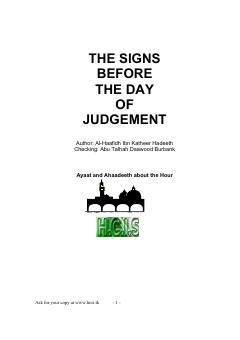

TSQiyomat kunining yaqinlashishi va uning alomatlari haqida islomiy manbalarga asoslangan asar.
Ushbu kitob mashhur olim Ibn Kasir tomonidan yozilgan bo'lib, Qiyomat kunining yaqinlashishi va uning alomatlari haqida so'z yuritadi. Muallif Qur'on oyatlari va sahih hadislar asosida oxirat kuni oldidan sodir bo'ladigan voqealarni batafsil bayon qiladi.